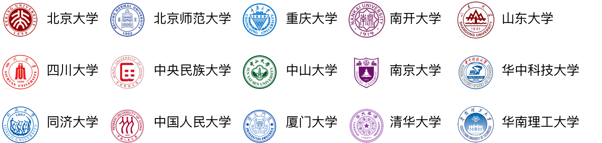

1918年10月，中国第一个新闻学研究团体“北京大学新闻研究会”成立，
在中国新闻传播学科发展上具有里程碑式的意义。
栉风沐雨一百年，一百年德业日新，
新闻传播学已经从单一的新闻学方向
衍生出网络新媒体、计算传播学、媒介产业管理等诸多新兴方向。
在万物互联的智能传播时代，站在新纪元的开端展望，
诸多学科交汇的新闻传播学究竟将何去何从？
一百年风雨兼程，一百年弦歌不辍，新闻传播学的发展离不开前赴后继的教师们上下求索砥砺前行的努力。教师的探索和研究一定程度上决定着学科发展的广度与深度，引领着新闻传播学的走向。因此，教师的教育背景不仅是个人爱好和研究兴趣的缩影，更与新闻传播学的未来发展流向一脉相连。
在2018年教育部第四轮学科评估中，24所双一流高校的新闻传播学在c-以上。双一流高校代表着我国高等教育先进水平，对其中15所官网教师个人信息较为齐全的高校教师进行分析，能够一探我国新闻传播学的发展态势。这15所高校涵盖我国东部、西部、南部、北部名校，专职教师560名，具有一定全国代表性。

15所高校教师就读的专业呈现多元并包之态，始终保有交叉学科的融汇入口。高校教师本科就读专业文理兼备，艺工兼容，涵盖新闻传播、物理、生物、计算机、英语、管理、油画等不同专业。硕博专业在向新闻传播学专业急剧聚拢，在细分领域内深耕细作的同时，依然保有专业多元主义的态势。教师专业背景的多元化为新闻传播学科带来新鲜血液，推动学科交叉发展，不断拓展学科发展边际。
教师们就读专业的多元化，从七位新闻传播学知名教师的教育背景中可见一斑，涵盖三种类型：始终在新闻传播领域研精覃思；本身具有跨学科学习经历，即硕博期间由其他专业学科转向新闻传播学；始终在其他专业学科求学深造，助推学科交叉发展。
从教师就读地来看，大城市聚拢作用明显，留学趋势凸显。北京高校林立，中国人民大学、中国传媒大学、北京大学、清华大学等名校集中于此，北京作为我国的政治中心，传媒行业繁盛，北京成为老师们求学的首选地。湖北、上海等地得益于武汉大学、复旦大学等老牌传媒名校，同样聚集大批学子。港澳台及海外地区新闻传播学科发展较为成熟领先，与学界研究最前沿接轨，带来知识思维的碰撞与交融，成为老师们攻读硕士和博士学位的心仪之地。
从明确已知性别和职称的543名教师中，教授级别230人，副教授级别207人，讲师级别106人，比例约为4：4：2，教授与副教授是如今新闻传播学科教学主力。其中，教授中男性占比70.4%，女性仅为29.6%；副教授和讲师中男女更为均衡，基本约为1：1。
教师教育背景专业多元化，交叉学科人才众多，在新闻传播学与其他学科的交叉碰撞中涌现更多的火花与灵感。具有国际视野，港澳台及海外地区学习或访学经历的老师占比45.2%，推动我国新闻传播学向国际化迈开更大步伐。无论是VR和AR的应用，还是机器写作和算法推荐，无论是质化思辨，还是量化考证，对于新闻传播学而言无疑都是一点一滴的进步。学科交叉融合、中国特色、与国际接轨成为如今新闻传播学的标签，新闻传播学未来究竟走向哪里，还有待时间来证明。
北京师范大学新闻传播学院传播学专业
杨梓倓 石韦颖 季晓旭
数据来源：各学校和学院官网、公开数据整理